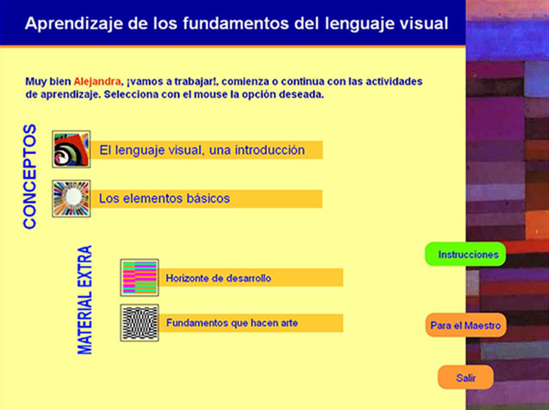

Este proyecto fue programado en el editor Authorware.
Lamentablemente ya no corre en Windows 10. Solo muestro imágenes de sus funcionalidades. Fig. 1. Menú inicial.
Fig. 2. Permite arrastrar solo al lugar correcto.
Fig. 3. Permite evaluar la elección del estudiante.
Fig. 4. Permite escoger colores según el criterio del usuario.
Fig. 5. Permite colocar en distinto orden los elementos.
Fig. 6. Al terminar ciertas labores retroalimenta.
Fig. 7. Aquí al deslizar pasar el mouse entre la zona +/- intercambia imágenes para generar un efecto de de mayor a menor saturación
Fig. 8. Registra el texto y lo almacena.
Fig. 9. genera animaciones para demostrar conceptos.

Fig. 10. Evalúa reactivos.
Fig. 11. Otra forma de evaluar reactivos.
Fig. 12. Con videos de aplicaciones comerciales demuestra la aplicación de los principios.
Esta propuesta genera un reporte de la actividad del alumno para que el maestro pueda evaluarlo.